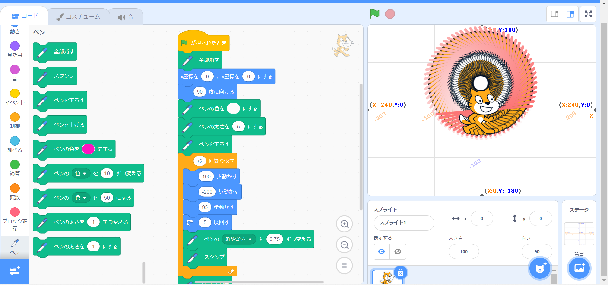
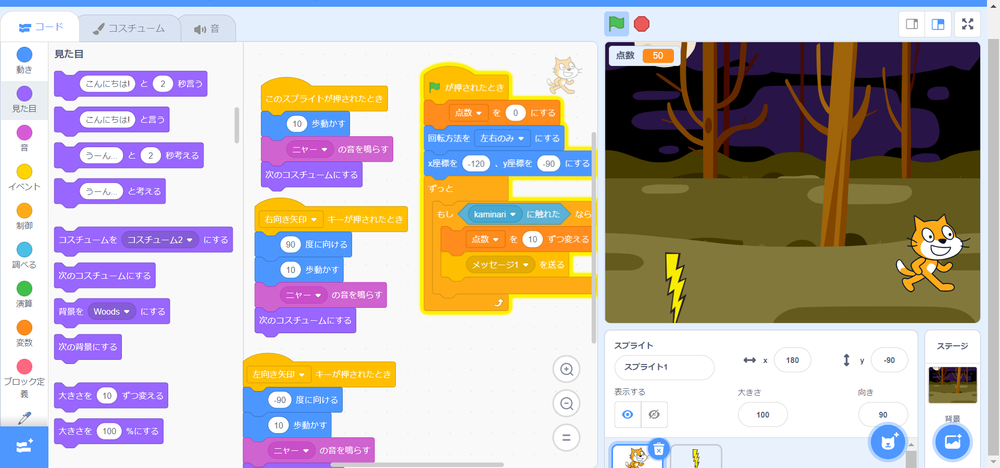

1週目のレポート ： 公大高専１年実習I-1
3B班32番 まだだだだだ
第1週目
1-1 サイエンスアート

1.内容
スクラッチを使って線を書くプログラムを作成した. このプログラムでは猫を円運動させながら線を引き, さらに猫のスタンプを押している. これにより眼球のような模様の渦を描いている.
2.感想
もっと気味の悪い渦を描こうと思ったが, 作り方が思いつかなかったため, 上図のようになった. 自分のセンスを磨いてさらに見た目の印象が強い渦を描きたいと思った.
1-2 ゲーム

1.内容
降ってくる雷を猫が頭で受け止めてスコアを稼ぐゲームを作成した.
2.感想
猫が雷に当たったときに体が真っ黒になるように絵を追加したが, 上手くいかず断念した. 原因はコスチューム3に黒くなった猫の画像を作ったためだと考える.
1-3 ホームページ作成
私のホームページ
1.内容
自分の特徴と持っている資格が記載されたホームページを作成した.
2.感想
一目で自分のものだとわかるように内容を工夫した. また, 資格覧に最近とった資格も記載しておいたため, ほぼ最新の状態となっている.